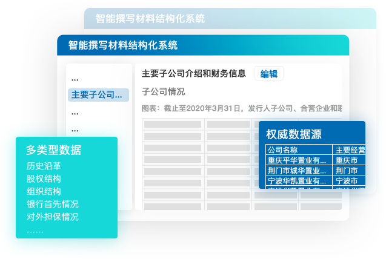
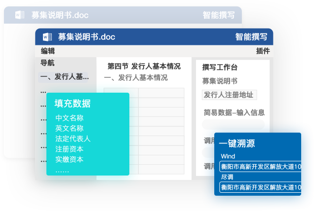
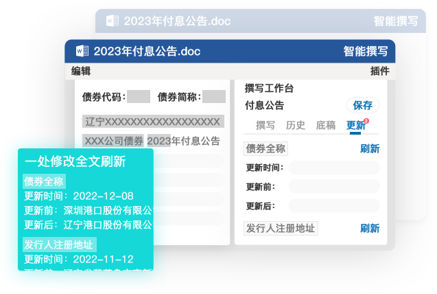
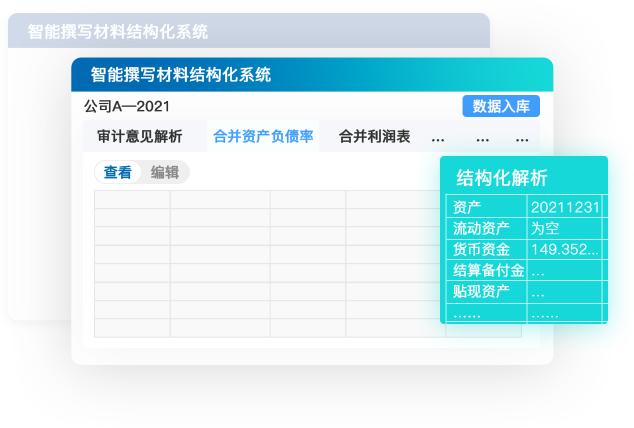

顶尖数据能力，保障撰写更快速、更精准
丰富数据类型，构建海量数据库
系统覆盖交易所、证监会等12000+权威数据源，采集募集说明书、审计报告等千种类型文件及企业辅导信息、二级市场动态等多类型数据，积极构建海量数据库，实现高质量智能撰写。


数据精准溯源，撰写更加轻量化
数据轻松一键溯源，所有填充数据、信息均可点击展示多项来源，可自主选择所需数据或修改，实现撰写轻量化。
勾稽关系校验，审核检验更轻松
报告勾稽关系校验便捷化，一处修改全文刷新，实现差异 自动提醒，更便捷于审核检验。


细颗粒度结构化解析，快速提取有效信息
智能化识别文档结构，细颗粒度解析公开数据报告，自有报告只需一键上传，系统便可精准提取有效数据。